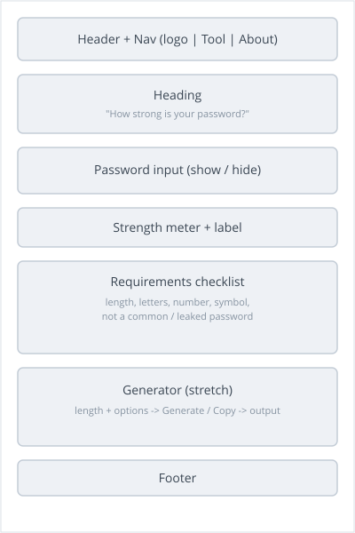
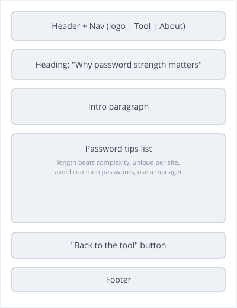

Purpose
- A simple, single page web app.
- Rates how strong a password is as the user types it.
- Later, it can also generate a strong random password.
- Everything runs in the browser, so a password is never sent or stored.
- Goal: help people build safer passwords and see what makes a password strong.
Audience
- Everyday internet users: students, family, and non technical people.
- People creating a new online account who want a quick strength check.
- Users who do not want to trust an unknown website with their password.
- Also a WDD 131 portfolio piece that shows clean, mobile first work.
Dynamic Elements
- Live checker: a listener on the password field runs on every keystroke and updates the page.
- Array 1 (blocklist): a commonPasswords array of weak or leaked passwords. commonPasswords.includes(pw) flags a match as too common.
- Array 2 (spread): [...pw] turns the password into an array of characters so each one can be checked.
- Array 3 (rules): a criteria array of rule objects. criteria.filter(...) counts the passed rules and criteria.forEach(...) builds the checklist.
- if / else picks the label and color: Weak, Medium, or Strong.
- DOM: the code selects and changes the strength bar, the label, and the checklist.
- Functions: isCommon, checkStrength, getStrengthLabel, updateUI.
- Stretch goal: a generator that builds a password from character arrays, then runs the same checker.
JavaScript requirements this meets:
- More than one function.
- Select an element, change it, and react to an event (the live input).
- Conditional branching with if / else.
- Objects, Arrays, and array methods (includes, filter, forEach), plus the spread operator.
Logo
Color Palette
- Palette URL: https://coolors.co/0b3d91-3a7ca5-2e933c-e09f3e-c1121f
- Green, amber, and red are also the Strong, Medium, and Weak states of the meter.
| Primary | Secondary | Accent 1 (Strong) | Accent 2 (Medium) |
|---|---|---|---|
| #0B3D91 | #3A7CA5 | #2E933C | #E09F3E |
Fonts
- Headings: Arial.
- Body text: Georgia.
- Passwords are shown in a monospace font so each character is clear.
- Simple, web safe fonts, so nothing extra needs to load.
Content
Home page (the tool)
- Heading: How strong is your password?
- Subtext: Type a password to see its strength instantly. Nothing you type ever leaves your browser.
- Password input with a show or hide toggle.
- Strength labels: Too common (avoid), Weak, Medium, Strong.
- Checklist: at least 12 characters; uppercase and lowercase letters; a number; a symbol; not a common or leaked password.
- Generator (later): length, Uppercase, Numbers, and Symbols options, plus Generate and Copy buttons.
About section
- Heading: Why password strength matters.
- Intro: A strong password is your first line of defense for every online account.
- Tips: length beats complexity; use a unique password for every site; avoid names, birthdays, and common passwords; a long passphrase is easy to remember and hard to crack; consider a password manager.
- Privacy note: PassGuard checks everything on your own device. Your password is never uploaded, logged, or saved.
- Button: Back to the tool.
Pseudocode
CHECKER (runs on every keystroke in the password box)
pw = value typed in the password field
IF commonPasswords.includes(pw) // ARRAY + array method
label = "Too common", color = red
ELSE
chars = [...pw] // spread the string into a character ARRAY
passed = criteria.filter(rule => rule.test(pw)) // ARRAY of rule objects
score = passed.length
IF score <= 1 -> label = "Weak", color = red
ELSE IF score <= 3 -> label = "Medium", color = amber
ELSE -> label = "Strong", color = green
update the strength bar and the label
criteria.forEach(rule => show a check or an x next to rule.label)
GENERATOR (stretch goal, runs when the Generate button is clicked)
read the chosen length and the option checkboxes (uppercase, numbers, symbols)
pool = [...lowercaseLetters]
IF uppercase is checked -> pool = [...pool, ...uppercaseLetters]
IF numbers is checked -> pool = [...pool, ...digits]
IF symbols is checked -> pool = [...pool, ...symbols]
password = ""
REPEAT length times -> add a random character from pool
show the password, then run the CHECKER on it
Wireframes
PassGuard is one page: the tool sits at the top and the About information continues below it. Here is a wireframe for each part.
Home page (the tool)

About section (child page)
